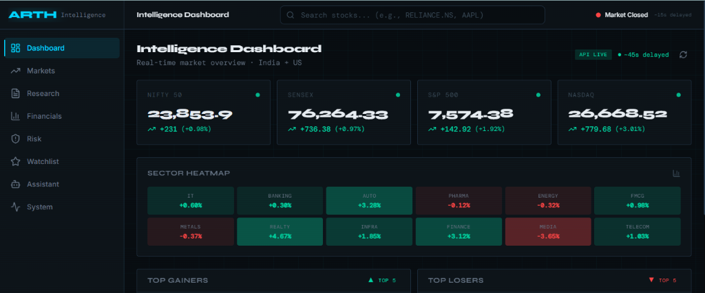
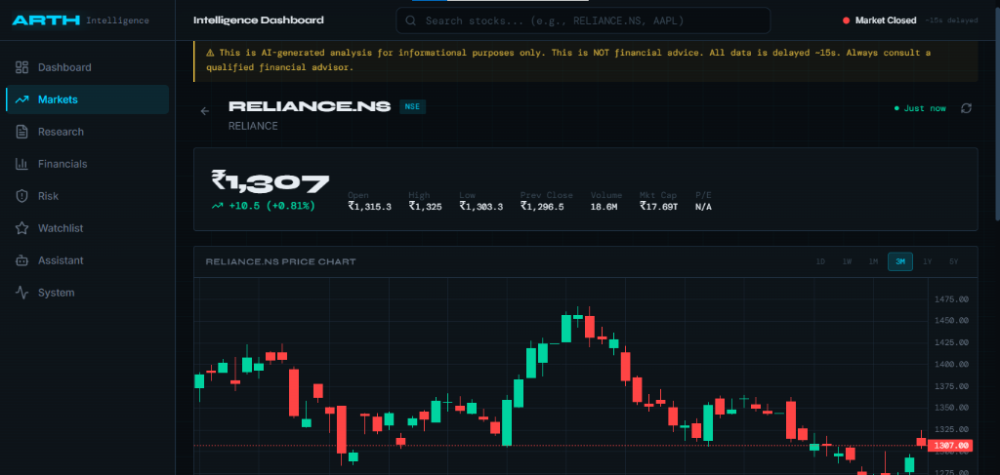
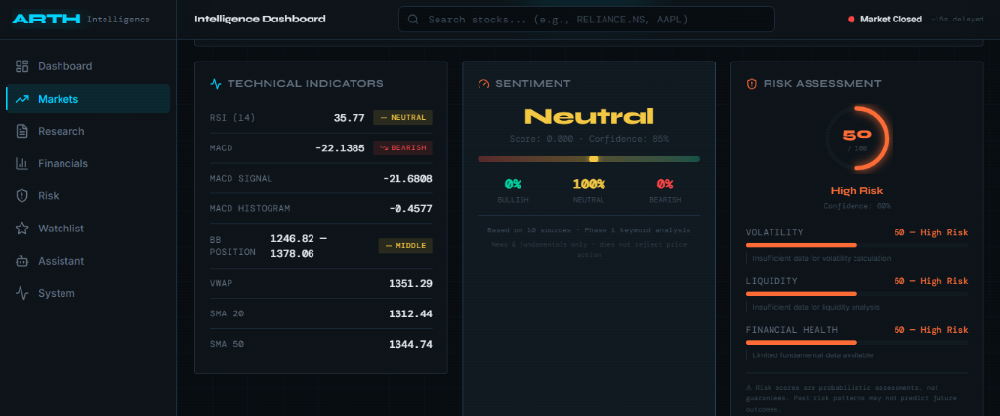

Full-Stack Engineer & AI Builder
About
Seeking software engineering, AI, or full-stack internship opportunities where I can build at the intersection of full-stack engineering and AI systems design.
Projects
Astra-OS
MVP
A local-first personal AI operating system. No cloud. No surveillance. Every inference runs on-device. Astra-OS gives you a persistent, reflective AI agent that knows your history, reasons over your tasks, and builds context over time.
ARTH
MVP
An institutional-grade financial intelligence platform. ARTH ingests real-time market feeds, runs a multi-indicator technical analysis engine, and leverages LLaMA 3.3 70B with highly structured prompt guardrails to generate streaming, hallucination-resistant stock reports via Server-Sent Events (SSE).
ARTH Intelligence Dashboard

Real-Time Overview
Global indexes (NIFTY 50, SENSEX, S&P 500, NASDAQ) and sectoral heatmaps.

Candlestick Charting
Real-time price tracking of individual equities (e.g. RELIANCE.NS) and technical trends.

Technical Gauges
Low-latency indicators (RSI, MACD, Bollinger Bands) alongside composite AI risk index.
Timeline
Present
Present
Present
2028 (Expected)
Credentials
Contact
Build
Together
Open to internships, freelance projects, collaborations, and interesting problems. If you're building something that matters, let's talk.